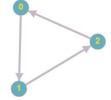
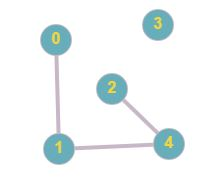
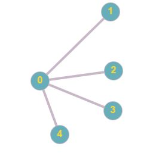
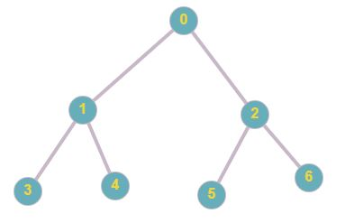
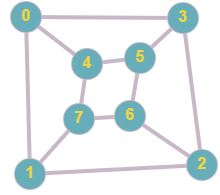
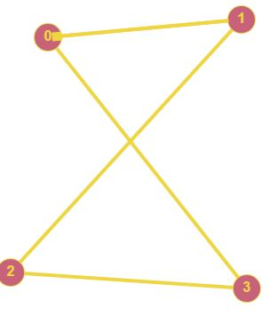
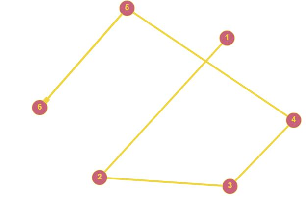
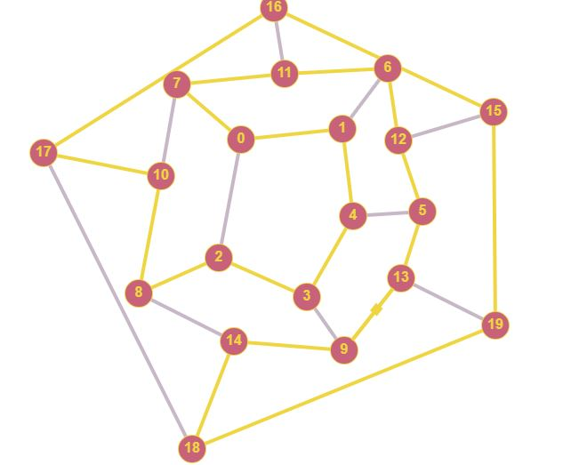
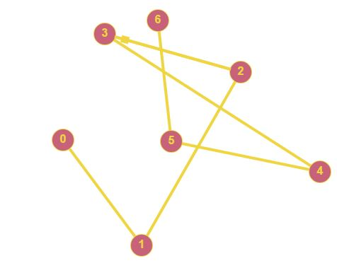
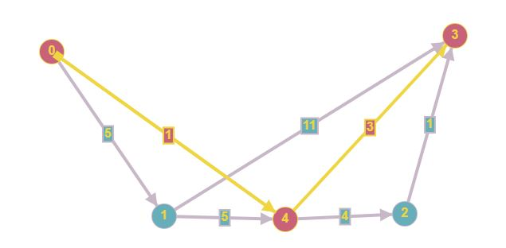

Граф — абстрактный математический объект, представляющий собой множество вершин графа и набор рёбер, то есть соединений между парами вершин.

Неориентированный граф —граф ребра кооторого не имеют направлений.

Связный граф — граф содержащий более одной компоненты связности.

Степень вершины графа — количество рёбервыхожящих из одной вершины.

Дерево — граф, в котором между каждой парой вершин есть пути.

Изоморфизм графа — биекция между множествами вершин графа смежны.

Эйлеров цикл — замкнутый путь, проходящий через каждое ребро графа ровно по одному разу.

Эйлерова цепь — незамкнутый эйлеров цикл

Гамильтонов цикл — замкнутый цикл, котоорый проходит через каждую вершину графа ровно по одному разу.

Гамильтонова цепь незамкнутый гамильтонов цикл.

Кратчайший путь алгоритмом Дейкстры
